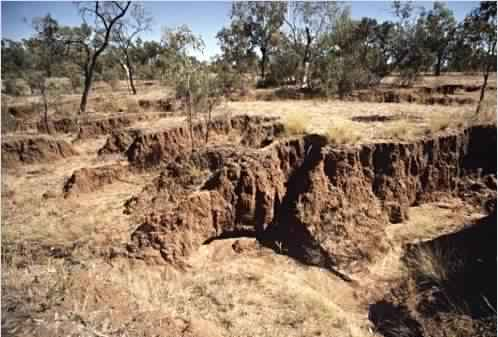

Soils (and the nutrients in them) are exposed to the sun’s heat. Soil moisture is dried up, nutrients evaporate and bacteria that help break down organic matter are affected. Eventually, rain washes down the soil surfaces and erosion take place. Soils never get their full potential back.
